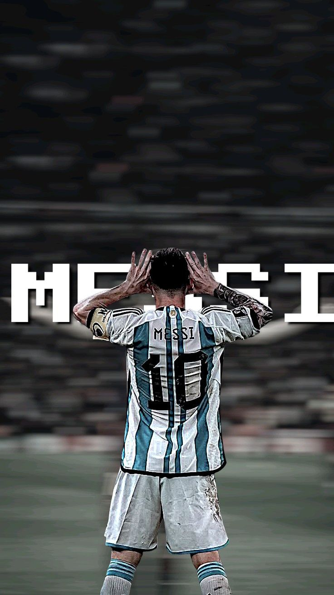

Lionel Messi is widely regarded as one of the greatest football players of all time, celebrated for his extraordinary vision, prolific goal-scoring, and masterful dribbling ability. Born in Rosario, Argentina, Messi spent the majority of his legendary club career with FC Barcelona, where he won numerous La Liga and UEFA Champions League titles, alongside earning a record-breaking eight Ballon d'Or awards. In 2022, he cemented his international legacy by leading Argentina to a historic FIFA World Cup victory. Currently, Messi showcases his talent in Major League Soccer (MLS) playing for Inter Miami CF, where he continues to draw global audiences and elevate the sport's popularity in North America.
Lionel Messi’s tenure with FC Barcelona is highly considered the most dominant era any single player has ever had with one club. After arriving at the famed La Masia academy as a teenager, Messi made his competitive first-team debut in 2004 and went on to completely rewrite the sport's history books. Over 17 unforgettable seasons, he established himself as the club's all-time top scorer with an astonishing 672 goals in 778 appearances. Serving as the engine of Pep Guardiola’s legendary "tiki-taka" side and later anchoring the prolific "MSN" trio with Luis Suárez and Neymar, Messi spearheaded a golden era at Camp Nou. He guided Barça to 35 trophies, including 10 La Liga titles and 4 UEFA Champions League crowns. His unmatched individual brilliance during this period was honored with six of his eight Ballon d'Or awards while wearing the iconic Blaugrana colors.